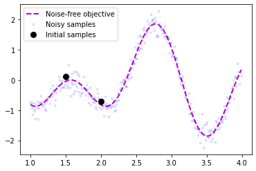
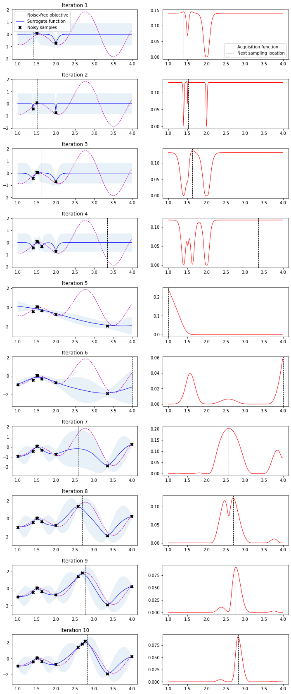
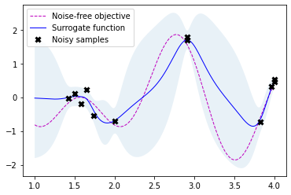
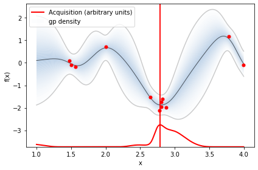

Bayesian Optimization
Bayesian Optimization
Below is a walk-through how to perform Bayesian Optimization in Python. This code follows work of Martin Krasser in order to optimize the following objective function:
$$f(x) = 2 \sin{(4 x)} \cos{(x)}$$ $$\text{where, } (1 < x < 4)$$
The first section goes through designing a Bayesian Optimization algorithm using Numpy and SciPy. The second section goes into how we can take advantage of a Python package to optimize our function. The is one of the cleanest explanations of Bayesian optimization I’ve come across so I found it helpful to go through this procedure myself. Bayesian optimization is also often used to perform hyperparameter optimization.
Preamble
from sklearn.gaussian_process import GaussianProcessRegressor
from sklearn.gaussian_process.kernels import ConstantKernel, Matern
from scipy.optimize import minimize
from scipy.stats import norm
import matplotlib.pyplot as plt
import numpy as np
# Install additional dependencies
# !pip install scikit-optimize==0.5.2
# !pip install GPy==1.9.8
# !pip install GPyOpt==1.2.1
# !pip install xgboost==0.90
Objective Function
We of course need a function to optimize so let’s create one. We also define the bounds and the inital sample points for our optimization problem.
bounds = np.array([[1.0, 4.0]])
noise = 0.2
def f(X, noise=noise):
return 2*np.sin(4*X) * np.cos(X) + noise * np.random.randn(*X.shape)
X_init = np.array([[1.5], [2]])
Y_init = f(X_init)
# Dense grid of points within bounds
X = np.arange(bounds[:, 0], bounds[:, 1], 0.01).reshape(-1, 1)
# Noise-free objective function values at X
Y = f(X,0)
# Plot optimization objective with noise level
plt.plot(X, Y, 'm--', lw=2, label='Noise-free objective')
plt.plot(X, f(X), 'b.', lw=1, alpha=0.1, label='Noisy samples')
plt.plot(X_init, Y_init, 'ko', mew=3, label='Initial samples')
plt.legend();

Plotting Function
We will want to plot our progress later on so let’s equipped ourself with some plotting methods.
def plot_approximation(gpr, X, Y, X_sample, Y_sample, X_next=None, show_legend=False):
mu, std = gpr.predict(X, return_std=True)
plt.fill_between(X.ravel(),
mu.ravel() + 1.96 * std,
mu.ravel() - 1.96 * std,
alpha=0.1)
plt.plot(X, Y, 'm--', lw=1, label='Noise-free objective')
plt.plot(X, mu, 'b-', lw=1, label='Surrogate function')
plt.plot(X_sample, Y_sample, 'kx', mew=3, label='Noisy samples')
if X_next:
plt.axvline(x=X_next, ls='--', c='k', lw=1)
if show_legend:
plt.legend()
def plot_acquisition(X, Y, X_next, show_legend=False):
plt.plot(X, Y, 'r-', lw=1, label='Acquisition function')
plt.axvline(x=X_next, ls='--', c='k', lw=1, label='Next sampling location')
if show_legend:
plt.legend()
def plot_convergence(X_sample, Y_sample, n_init=2):
plt.figure(figsize=(12, 3))
x = X_sample[n_init:].ravel()
y = Y_sample[n_init:].ravel()
r = range(1, len(x)+1)
x_neighbor_dist = [np.abs(a-b) for a, b in zip(x, x[1:])]
y_max_watermark = np.maximum.accumulate(y)
plt.subplot(1, 2, 1)
plt.plot(r[1:], x_neighbor_dist, 'bo-')
plt.xlabel('Iteration')
plt.ylabel('Distance')
plt.title('Distance between consecutive x\'s')
plt.subplot(1, 2, 2)
plt.plot(r, y_max_watermark, 'ro-')
plt.xlabel('Iteration')
plt.ylabel('Best Y')
plt.title('Value of best selected sample')
Our overall goal is to find the global optimum on the left in a small number of steps. To do this, we need to implement the acquisition function defined in Equation (2) as expected_improvement function.
Activation function is the fucntion that determines which point we should evalulate next
def expected_improvement(X, X_sample, Y_sample, gpr, xi=0.01):
'''
Computes the EI at points X based on existing samples X_sample
and Y_sample using a Gaussian process surrogate model.
Args:
X: Points at which EI shall be computed (m x d).
X_sample: Sample locations (n x d).
Y_sample: Sample values (n x 1).
gpr: A GaussianProcessRegressor fitted to samples.
xi: Exploitation-exploration trade-off parameter.
Returns:
Expected improvements at points X.
'''
mu, sigma = gpr.predict(X, return_std=True)
mu_sample = gpr.predict(X_sample)
sigma = sigma.reshape(-1, 1)
# Needed for noise-based model,
# otherwise use np.max(Y_sample).
# See also section 2.4 in [...]
mu_sample_opt = np.max(mu_sample)
with np.errstate(divide='warn'):
imp = mu - mu_sample_opt - xi
Z = imp / sigma
ei = imp * norm.cdf(Z) + sigma * norm.pdf(Z)
ei[sigma == 0.0] = 0.0
return ei
We also need a function that proposes the next sampling point by computing the location of the acquisition function maximum. Optimization is restarted n_restarts times to avoid local optima.
def propose_location(acquisition, X_sample, Y_sample, gpr, bounds, n_restarts=25):
'''
Proposes the next sampling point by optimizing the acquisition function.
Args:
acquisition: Acquisition function.
X_sample: Sample locations (n x d).
Y_sample: Sample values (n x 1).
gpr: A GaussianProcessRegressor fitted to samples.
Returns:
Location of the acquisition function maximum.
'''
dim = X_sample.shape[1]
min_val = 1
min_x = None
def min_obj(X):
# Minimization objective is the negative acquisition function
return -acquisition(X.reshape(-1, dim), X_sample, Y_sample, gpr).ravel()
# Find the best optimum by starting from n_restart different random points.
for x0 in np.random.uniform(bounds[:, 0], bounds[:, 1], size=(n_restarts, dim)):
res = minimize(min_obj, x0=x0, bounds=bounds, method='L-BFGS-B')
if res.fun < min_val:
min_val = res.fun[0]
min_x = res.x
return min_x.reshape(-1, 1)
Now we have all components needed to run Bayesian optimization with the algorithm outlined above.
We have plotted the objective function, the GP posterior predictive mean, the 95% confidence interval of the mean and the samples obtained from the objective function so far with noise. The right plot shows the acquisition function. The maximum of the aquisition function is what’s used to propose the next sampling point for the next iteration—denoted by a black vertical dashed line.
# Gaussian process with Matérn kernel as surrogate model
# The Gaussian process in the following example is configured with a Matérn kernel
# generalization of the squared exponential kernel or RBF kernel
# Alpha parameters configures the known noise level
m52 = ConstantKernel(1.0) * Matern(length_scale=1.0, nu=2.5)
gpr = GaussianProcessRegressor(kernel=m52, alpha=noise**2)
# Initialize samples
X_sample = X_init
Y_sample = Y_init
# Number of iterations
n_iter = 10
plt.figure(figsize=(12, n_iter * 3))
plt.subplots_adjust(hspace=0.4)
for i in range(n_iter):
# Update Gaussian process with existing samples
gpr.fit(X_sample, Y_sample)
# Obtain next sampling point from the acquisition function (expected_improvement)
X_next = propose_location(expected_improvement, X_sample, Y_sample, gpr, bounds)
# Obtain next noisy sample from the objective function
Y_next = f(X_next, noise)
# Plot samples, surrogate function, noise-free objective and next sampling location
plt.subplot(n_iter, 2, 2 * i + 1)
plot_approximation(gpr, X, Y, X_sample, Y_sample, X_next, show_legend=i==0)
plt.title(f'Iteration {i+1}')
plt.subplot(n_iter, 2, 2 * i + 2)
plot_acquisition(X, expected_improvement(X, X_sample, Y_sample, gpr), X_next, show_legend=i==0)
# Add sample to previous samples
X_sample = np.vstack((X_sample, X_next))
Y_sample = np.vstack((Y_sample, Y_next))

Using Python Libraries
Scikit-optimize
from sklearn.base import clone
from skopt import gp_minimize
from skopt.learning import GaussianProcessRegressor
from skopt.learning.gaussian_process.kernels import ConstantKernel, Matern
# Use custom kernel and estimator to match previous example
m52 = ConstantKernel(1.0) * Matern(length_scale=1.0, nu=2.5)
gpr = GaussianProcessRegressor(kernel=m52, alpha=noise**2)
r = gp_minimize(lambda x: -f(np.array(x))[0],
bounds.tolist(),
base_estimator=gpr,
acq_func='EI', # expected improvement
xi=0.01, # exploitation-exploration trade-off
n_calls=10, # number of iterations
n_random_starts=0, # initial samples are provided
x0=X_init.tolist(), # initial samples
y0=-Y_init.ravel())
# Fit GP model to samples for plotting results
gpr.fit(r.x_iters, -r.func_vals)
# Plot the fitted model and the noisy samples
plot_approximation(gpr, X, Y, r.x_iters, -r.func_vals, show_legend=True)

There are numerous Bayesian optimization libraries out there and giving a comprehensive overview is not the goal of this article. Instead, I’ll pick two that I used in the past and show the minimum setup needed to get the previous example running.
Scikit-optimize is a library for sequential model-based optimization that is based on scikit-learn. It also supports Bayesian optimization using Gaussian processes. The API is designed around minimization, hence, we have to provide negative objective function values. The results obtained here slightly differ from previous results because of non-deterministic optimization behavior and different noisy samples drawn from the objective function.
import GPy
import GPyOpt
from GPyOpt.methods import BayesianOptimization
kernel = GPy.kern.Matern52(input_dim=1, variance=1.0, lengthscale=1.0)
bds = [{'name': 'X', 'type': 'continuous', 'domain': bounds.ravel()}]
optimizer = BayesianOptimization(f=f,
domain=bds,
model_type='GP',
kernel=kernel,
acquisition_type ='EI',
acquisition_jitter = 0.01,
X=X_init,
Y=-Y_init,
noise_var = noise**2,
exact_feval=False,
normalize_Y=False,
maximize=True)
optimizer.run_optimization(max_iter=40)
optimizer.plot_acquisition()
